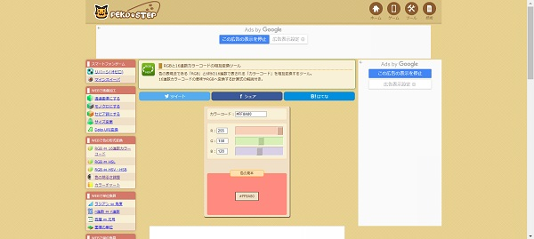
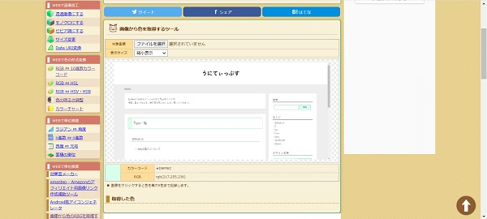
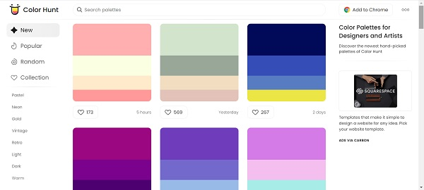
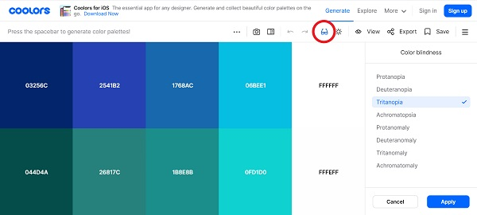

UIを作成するにあたって便利だと思ったサイトを備忘録として記載しておきます。
配色に関して困ったことがあれば参考にしてください。
PEKO STEP 「RGBと16進数カラーコードの相互変換ツール」
RGBの数値から16進数のカラーコードに変換してくれるサイトです。
PEKO STEP 「画像から色のRGBを取得するスポイトツール」
画像から指定した色のカラーコードを抽出してくれるサイトです。
「この色使いたいけどカラーコードが分からない…」という時に使用すると便利です。
使用する画像をドロップで画面に置き、読み取りたい色をクリックするとカラーコードを表示してくれます。
Chrome拡張機能 「ColorPick Eyedropper」
WEBサイト内の色を知りたい場合はChromeの拡張機能の「ColorPick Eyedropper」を使用すると便利です。
参考：https://www.qam-web.com/?p=15928
リンク：https://chrome.google.com/webstore/detail/colorpick-eyedropper/ohcpnigalekghcmgcdcenkpelffpdolg
Random Material Palette Generator
画面をクリックするとランダムで3色の配色パターンを表示してくれます。
また、右側のアイコンをクリックするとテンプレートを切り替えて表示することができます。
Color Hunt
4色のカラーパレットを提案してくれます。
検索バーをクリックすると探したい色やテーマを選択できるので簡単に理想のカラーパレットが見つかります。
また、カラーパレットのハートボタンを押すことでコレクション(お気に入り)として登録され、気になるカラーパレットを比較しながら見ることができます。
Color Drop
・4色のカラーパレット表示
・フラットカラー一覧表示
・画像からカラーコード表示
・カラーコード変換
・グラデーション作成
以上の5つの機能が使用できるサイトです。右上のメニューから切り替えができます。
Coolors
スペースキーを押すたびにランダムに色を提案してくれるサイトです。
「＋」で色の数を増やしたり、ロック機能で色を固定させて他の色を切り替えることもできるので、自分の好きなパレットを見つけることができます。
また、眼鏡のボタンをクリックすると色覚異常の人がどのように見えているか表示してくれるので、アクセシビリティに配慮した組み合わせを探すことができます。
MATERIAL DESIGN Color Tool
1色指定すると、その色でUIのイメージやアクセシビリティをチェックすることができます。
ACCESSIBILITYを選択すると、選択した色を背景色にして黒文字と白文字の適正を表示してくれます。
リンク：https://material.io/resources/color/#!/?view.left=0&view.right=0